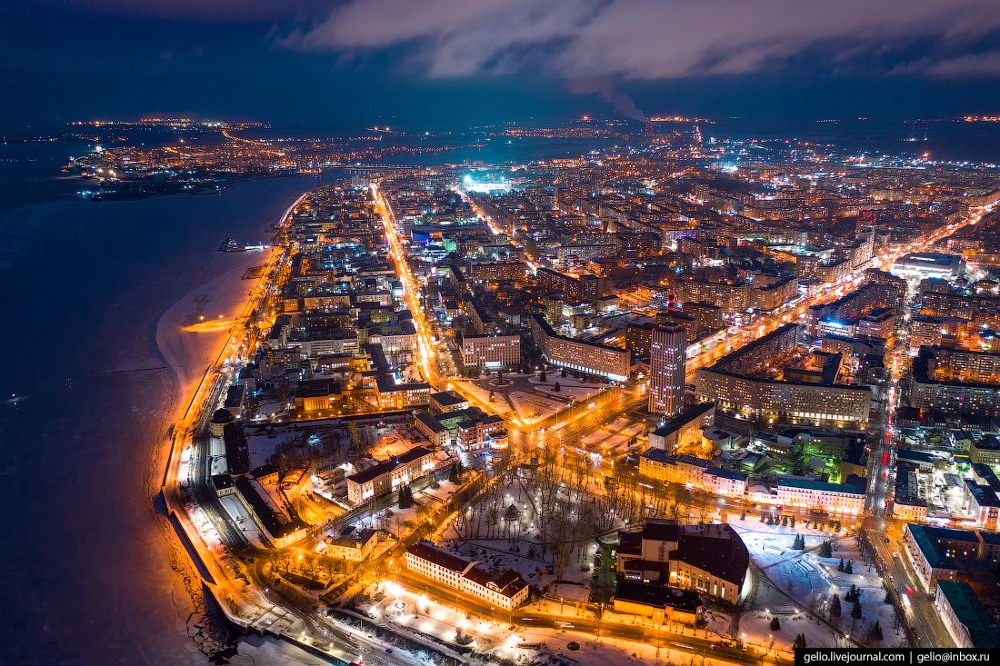
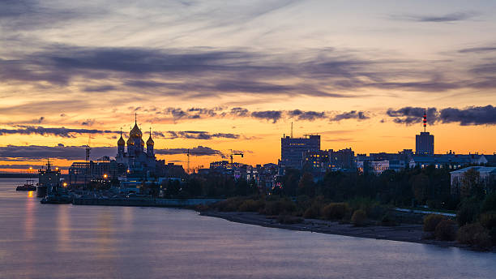

Do you know something about Arkhangelsk?

Info
Arkhangelsk is located in Northwest Russia, where the Dvina river dissolves into the White Sea. It is the base for about 390 thousand inhabitants who make their living from timber trade and paper industry. Arkhangelsk city has a large commercial and fishing port.

History
Arkhangelsk was founded in 1584 and became the first Russian port playing the major role in trade with Europe until the foundation of Saint Petersburg in 1703. Since that, Arkhangelsk has been developing as a provincial city.